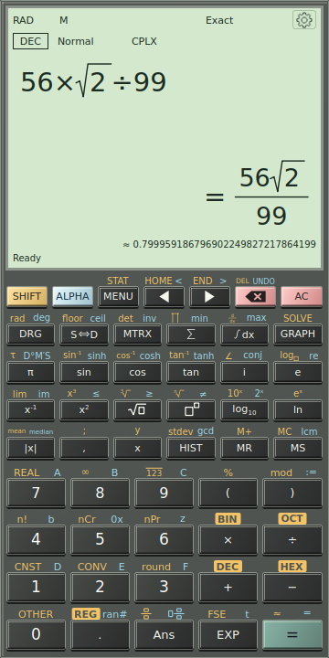

Exact fractions, decimals, Ans and angle conventions.
Tags: User guide
[download original] [view raw text] — 2,753 bytes
Open Calculate, or press Ctrl+L to select the calculator expression.
Type
1/3+1/6.Press Enter or click the equals key. Exact mode displays
1/2.Use S⇔D to display the stored answer as a decimal:
0.5.Use Ans in your next expression, for example
Ans*6, then evaluate to obtain3.
An equals sign typed with the physical keyboard is equation text; Enter performs evaluation. AC clears the active expression/output. It does not erase independent saved history or registers. A blank startup display is intentional; the application does not invent a zero result.
Exact, decimal and approximation markers
Exact retains simplified fractions, radicals and symbolic quantities where possible. Decimal requests a numerical presentation. The marker = means the displayed value is exact; ≈ means it is approximate. The marker applies to the displayed value, not merely to the appearance of the digits.
For sqrt(2), the exact answer is a radical and its decimal is approximate. For 1/3, a complete repeating cycle can be shown with an overline and =. If the selected digit budget cannot show the complete cycle, the application uses a rounded approximation. Copying a recurring answer preserves its exact rational value.
S⇔D reformats the stored answer without calculating again. This matters for random expressions and answers that depend on changing variables. In contrast, SHIFT then equals (≈) evaluates the expression again in Decimal mode. F5 switches the result mode.


The input, exact result and secondary decimal presentation are distinct. The RAD/DEG indicator belongs to angle interpretation; it does not determine whether a number is exact.
Settings offers Exact fractions → Improper / Mixed. Significant digits controls general numerical precision, from 10 to 200 digits; it is different from FIX decimal places, which controls fixed decimal presentation.
Angle and number domain
Check DEG, RAD or GRAD before using trigonometry. F4 cycles the angle mode. In DEG, sin(30) is 1/2; in RAD, use sin(pi/6) for the corresponding angle. Explicit angle units such as 90 deg and pi rad make an expression's intent clear.
REAL / CPLX controls the number domain. Choose complex numbers when a calculation requires i, such as sqrt(-1). A principal square root is not an equation's complete set of roots: solving x^2=4 and evaluating sqrt(4) are different tasks.
Previous: Get oriented · Manual contents · Next: Enter and edit mathematics